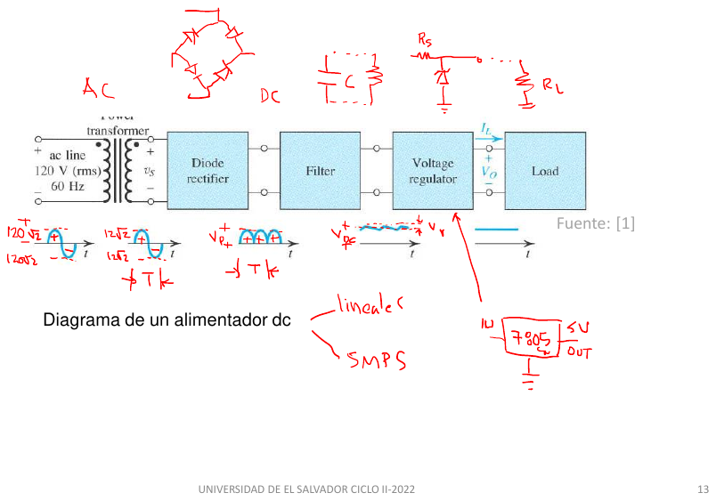
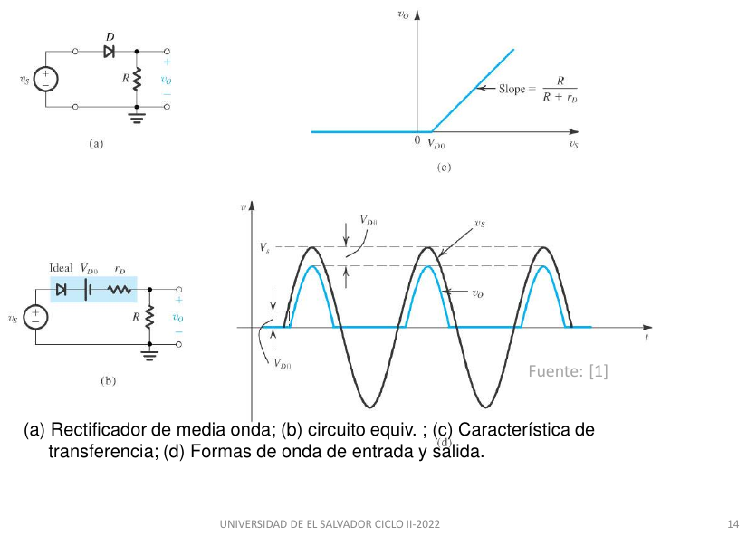
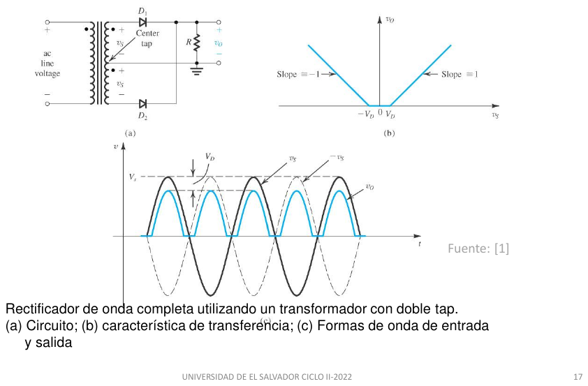
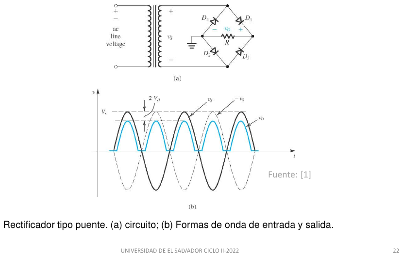
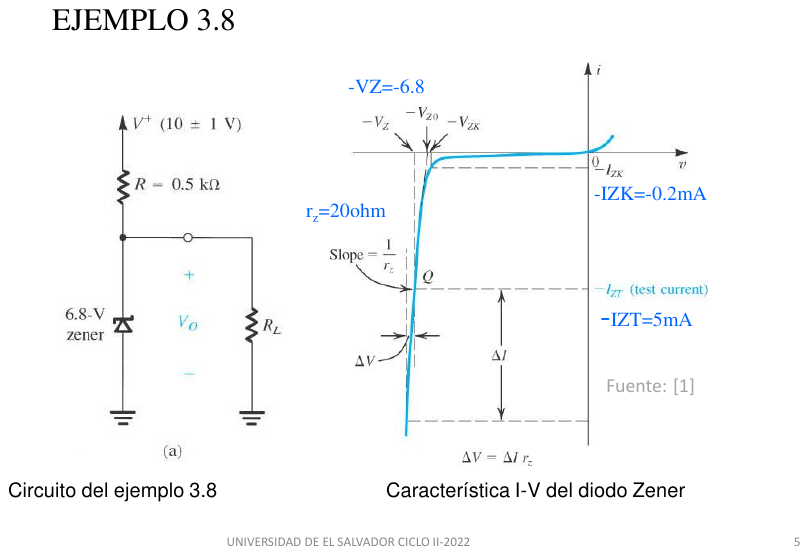
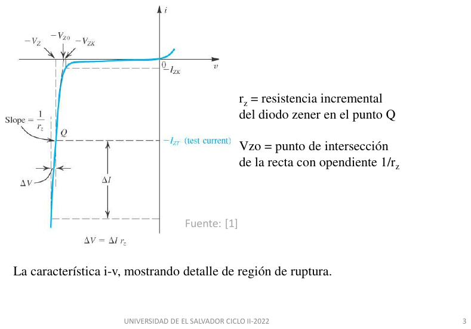
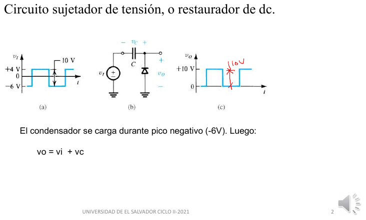
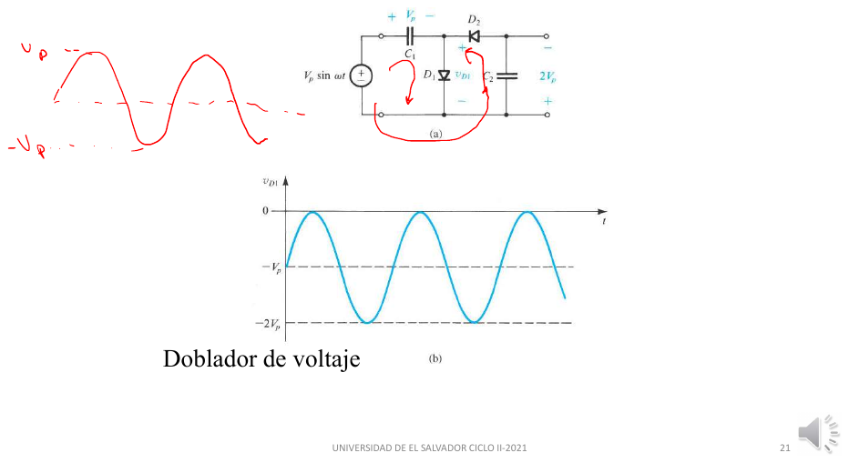
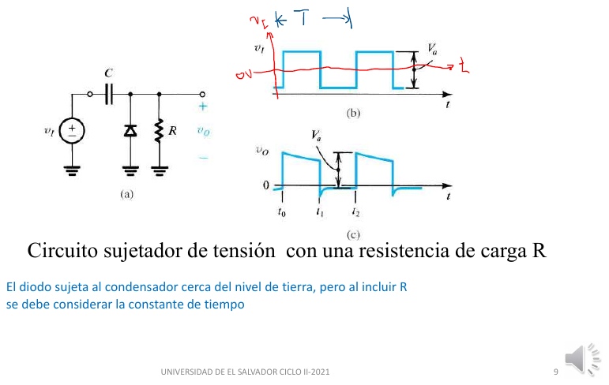

Guía completa, explicada paso a paso · Bloques 4, 5 y 6 del plan · Es el núcleo del parcial: 60–70 % de la nota en todos los años
SÍMBOLOS ASCII (los mismos de la guía 01)
--/\/\/-- resistencia --||-- condensador -->|-- diodo (ánodo -> cátodo)
(~ vs) fuente senoidal (+ 5V -) fuente DC (^ I) fuente de corriente
-)- cruce de cables SIN conexión ---+--- nodo (con conexión)
o o rama abierta (diodo OFF) GND tierra, 0 V
Verticales: | | | |
\ / --- -z- ---
--- / \ / \ --- C
| | | |
conduce conduce Zener condensador
hacia hacia (cátodo
abajo arriba arriba)
Reemplazos: diodo ON -> batería V_D | diodo OFF -> abierto | Zener en ruptura -> V_Z0 + r_z
Para v(t) = Vp·sen(ωt), con ω = 2πf = 377 rad/s a 60 Hz y periodo T = 1/60 s = 16.67 ms:
| Forma de onda | Valor pico | Valor promedio (DC) | Valor eficaz (rms) |
|---|---|---|---|
| Senoidal completa | Vp | 0 | Vp/√2 = 0.707Vp |
| Media onda (medio ciclo sí, medio no) | Vp | Vp/π = 0.318Vp | Vp/2 |
| Onda completa (valor absoluto) | Vp | 2Vp/π = 0.637Vp | Vp/√2 |
N1 : N2 +----+ +----+ | )| |( | + (~ v_p) )| |( v_s v_s,rms = v_p,rms * (N2 / N1) | )| |( | - V_s (pico) = raíz(2) * v_s,rms +----+ +----+ primario secundario
Técnica: relación de transformación + conversión rms → pico.
¿Se redibuja? No.
Resultado: Vs = 16.97 V pico
red 120 Vac transformador rectificador filtro C regulador carga
~~~~~~~~~~ --> [ baja tensión ] --> [ diodos ] ------> [ condensador ] --> [ Zener / CI ] --> [ R_L ]
169.7 V pico p. ej. 16.97 V |senoidal| DC con rizado DC casi pura
/\/\/\/\ ~~~~~~~ ---------
Figura de clase


D +---------------->|--------+----------o + v_o | | (~ vs) vs = V_s sen(wt) > | < R_L | > | | +--------------------------+----------o - v_o (GND)
Técnica: modelo de caída constante + LVK.
¿Se redibuja? Sí. D (ON) → batería VD con + en el ánodo.
+------(+ V_D -)-----------+----------o + v_o | D ON | (~ vs) i --> > R_L | | +--------------------------+----------o -
Resultado: vo = vs − VD. El diodo empieza a conducir en θ = arcsen(VD/Vs) y deja de conducir en π − θ.
Técnica: modelo ideal en corte + LVK para la tensión inversa.
¿Se redibuja? Sí. D (OFF) → circuito abierto. Sin corriente, vo = 0.
+--------o o----------+----------o + v_o = 0 | + v_D - | (~ vs) D abierto > R_L (i = 0) | | +--------------------------+----------o -
Resultado: vo = 0 y PIV = Vs.
^ v (V)
| ... ..
16.27 + .****** ******
| ** * .* **
| * * .* *
| * * .* *
| * * .* *
0 +*---------------******************---------------*****************
| . . . .
| . . . .
| . . . .
| .. .. . .
| .. .. .. ..
-16.97 + .. ...
180° 360° 540° 720° wt
. entrada vs (16.97 V pico) * salida v_o = vs - 0.7 V en el semiciclo +, 0 en el semiciclo -
En el semiciclo - el diodo soporta toda la tensión inversa: PIV = 16.97 V
El secundario tiene una toma en el centro (CT) que se usa como tierra. Cada mitad entrega Vs pico, en contrafase: cuando A es +vs, B es −vs.

D1
+------A------------>|-----------+
| |
(~ vs) mitad superior |
| +--------+--------o + v_o
CT------------+ | |
| | | >
(~ vs) mitad | | < R_L
| inferior | | >
+------B------)------------>|----+ |
| D2 |
+---------------------------+--------o - v_o (GND = CT)Técnica: método de estados + LVK en la malla superior.
¿Se redibuja? Sí. D1 (ON) → batería VD. D2 (OFF, su ánodo B está en −vs) → abierto.
A --(+ V_D -)--+----------+ B --o o-- (D2 abierto)
| D1 | |
(~ vs) | > R_L v_o = vs - V_D
| | |
CT ------------+----------+ (GND)
Resultado: vo = vs − VD y PIV = 2Vs − VD (el doble que en media onda: es el precio de esta configuración).
Técnica: el mismo análisis por simetría.
¿Se redibuja? Sí. D2 (ON) → batería VD. D1 (OFF) → abierto. La corriente en RL sigue yendo hacia abajo.
Resultado: vo = |vs| − VD: los dos semiciclos salen positivos. Promedio ≈ 2Vp,o/π.
Usa un secundario simple y cuatro diodos. En cada semiciclo conducen dos diodos en serie con la carga y los otros dos quedan en inversa. Nunca conducen los cuatro a la vez.

+---------------+---------------+-------o + v_o
| | |
--- --- >
D1 / \ D3 / \ < R_L
| | >
+-----A------+ | |
| | | |
(~ vs) --- | |
| D4 / \ | |
| | | |
+-----B------)---------------+ |
| | |
| --- |
| D2 / \ |
| | |
+---------------+---------------+-------o - v_o (GND)
Los cuatro diodos "apuntan hacia arriba": ánodo abajo, cátodo arriba.
D1: A -> riel + D3: B -> riel + D4: riel - -> A D2: riel - -> BTécnica: método de estados + LVK en la malla A → D1 → RL → D2 → B.
¿Se redibuja? Sí. D1 y D2 (ON) → baterías VD. D3 y D4 (OFF) → circuito abierto (se borran sus ramas).
A --(+ V_D -)--> riel + --/\/\/--> riel - --(+ V_D -)--> B
D1 R_L D2
+ v_o -
D3 abierto: su ánodo (B) está en el punto más negativo
D4 abierto: su cátodo (A) está en el punto más positivo
Resultado: vo = vs − 2VD y PIV = Vs − VD por diodo.
Técnica: método de estados + LVK en la malla B → D3 → RL → D4 → A.
¿Se redibuja? Sí. D3 y D4 (ON) → baterías VD. D1 y D2 (OFF) → abiertos.
B --(+ V_D -)--> riel + --/\/\/--> riel - --(+ V_D -)--> A
D3 R_L D4
+ v_o - (la corriente en R_L va en el MISMO sentido)
Resultado: vo = |vs| − 2VD. Salida de onda completa con un solo secundario.
^ v (V)
| ... ..
15.57 + .*****. ***** .***** *****
| .* ** * ** .** *. ** *
| ** * * * .* *. * **
| * * * * .* *. * *
| * * * * .* *. * *
0 +*---------------**--------------**--------------**---------------*
| . . . .
| . . . .
| . . . .
| .. .. . .
| .. .. .. ..
-16.97 + .. ...
180° 360° 540° 720° wt
. entrada vs * salida del puente |vs| - 2 V_D (D1+D2 en los semiciclos +, D3+D4 en los -)
| Tipo | Pico de salida | Promedio (sin filtro) | PIV por diodo | Diodos que conducen a la vez |
|---|---|---|---|---|
| Media onda | Vs − VD | ≈ Vp,o/π | Vs | 1 (solo en el semiciclo +) |
| Derivación central | Vs − VD (Vs de media bobina) | ≈ 2Vp,o/π | 2Vs − VD | 1 (D1 o D2) |
| Puente | Vs − 2VD | ≈ 2Vp,o/π | Vs − VD | 2 (D1+D2 o D3+D4) |
Técnica: conversión rms → pico.
¿Se redibuja? No.
Resultado: Vs = 16.97 V
Técnica: LVK con los diodos ON (tabla anterior) + valor promedio de la senoidal rectificada.
¿Se redibuja? Sí, con los equivalentes de los pasos 2.1 a 2.3 (uno o dos diodos → batería VD).
| Vp,o | Vprom | Iprom = Vprom/RL | PIV | |
|---|---|---|---|---|
| Media onda | 16.97 − 0.7 = 16.27 V | 16.27/π = 5.18 V | 51.8 mA | 16.97 V |
| Derivación central (12 Vrms por mitad) | 16.27 V | 2(16.27)/π = 10.36 V | 103.6 mA | 2(16.97) − 0.7 = 33.24 V |
| Puente | 16.97 − 1.4 = 15.57 V | 2(15.57)/π = 9.91 V | 99.1 mA | 16.97 − 0.7 = 16.27 V |
Resultado: el puente da casi el doble de DC que la media onda con el mismo transformador y la mitad de PIV que la derivación central; a cambio pierde 2VD.
Figuras de clase
Se pone un condensador C en paralelo con RL. Así funciona, ciclo por ciclo:
Puente con filtro: ... D1/D2 o D3/D4 ...
riel + o-----+-----------+------o + v_o
| |
--- >
--- C < R_L
| >
riel - o-----+-----------+------o -
Durante la DESCARGA (todos los diodos OFF): Durante la CARGA (un par ON):
+-----+-----+ v_o = |vs| - 2 V_D (sigue a la entrada)
| | | el par ON le entrega a C la carga que
--- > | perdió, en un pulso de duración ΔT
--- C < R_L| i_L = v_o / R_L
| > |
+-----+-----+ v_o(t) = V_p e^(-t/RC) ~ V_p - (I_L/C) t
^ v
|
V_p +- - - -***- - - - - - *** - - - - - ****- - - - - -***- - - - - - ** V_p
| * .**** ** .**** * .**** * ***** *
| * . ****** . **** * . **** * . **** *
min +- - * - - -.- - - -*- - - . - - -** - - -.- - - * - - -.- - - -*- - V_p - V_r
| * . . . . . . . .
| * . . . . . . . .
| * . . . . . . . .
| * . . . . . . . .
| * . . . . . . . .
| * . . .. .. ..
|* .. . . ..
0 +*--------------.----------------------------------------------------
90° 270° 450° 630° wt
i_D + ### ### #### #### ####
| # # # # # # # # #
| # # # # # # # # #
0 +#####---############---###########----###########----###########----
90° 270° 450° 630° wt
. |vs| rectificada * v_o con condensador (rizado exagerado para verlo)
Los diodos conducen solo en el tramo de subida justo antes de cada pico (duración ΔT):
ahí aparecen los pulsos de corriente ### ; el resto del tiempo C alimenta sola a la carga.
Técnica: conservación de carga en el condensador (Q = C·ΔV) con descarga a corriente casi constante IL ≈ Vp/R.
¿Se redibuja? Sí: circuito de descarga (diodos abiertos, C alimentando RL), como arriba.
Resultado: Vr = Vp/(2fRC) (onda completa) y Vdc ≈ Vp − Vr/2.
Técnica: igualar la entrada con la tensión mínima del condensador + aproximación cos x ≈ 1 − x²/2.
¿Se redibuja? No.
Resultado: ωΔT = √(2Vr/Vp). Fracción del ciclo en que conduce cada diodo = ωΔT/2π.
Técnica A (profesor): el pulso de corriente es un triángulo de base ΔT; su área (carga) debe reponer la carga que perdió C en medio ciclo. Técnica B (Sedra): iD = C·dv/dt + IL al inicio de la conducción.
¿Se redibuja? No.
i_D ^
| /| área del triángulo = (1/2) * I_pico * ΔT
I_pico+ / | carga que perdió C = I_dc * T/2
| / |
| / | (1/2) I_pico ΔT = I_dc T/2 => I_pico = I_dc * T / ΔT
+----+----+-------> t
|<ΔT>|
Resultado: siempre di qué fórmula usas. En promedio sobre todo el ciclo, cada diodo de un puente lleva Idc/2.
Técnica: la misma conservación de carga, pero con el tiempo de descarga real T/2 − ΔT.
¿Se redibuja? No.
Resultado: aplica la corrección cuando Vr supera ~10 % de Vp; el profesor la pide explícitamente.
Técnica: balance de potencia + valor rms de un tren de pulsos triangulares.
¿Se redibuja? No.
Resultado: el PF de un rectificador con C es bajo (≈ 0.5–0.6) porque la corriente llega en pulsos.
puente (D1..D4)
(~ 12 Vrms) ---> [ D1 D2 / D3 D4 ] ---+-----------+------o + v_o
| |
--- >
--- 1000 uF < 100 ohm
| >
------+-----------+------o -
Técnica: LVK en la malla de carga (un par ON en el pico).
¿Se redibuja? Sí. En el pico positivo: D1 y D2 (ON) → baterías de 0.7 V; D3 y D4 (OFF) → abiertos.
A --(+0.7-)--+-----+-----+--(+0.7-)-- B
D1 | | | D2
--- > |
--- C < R_L | (C en paralelo con R_L entre los rieles)
| > |
+-----+-----+
Resultado: Vp = 15.57 V
Técnica: descarga del condensador (Deducción 1).
¿Se redibuja? Sí. Todos los diodos (OFF) → abiertos: queda C descargándose en RL.
Resultado: Vr = 1.30 V (8.3 % de Vp), Vdc = 14.92 V, IL = 149 mA.
Técnica: Deducción 2.
¿Se redibuja? No.
Resultado: ΔT = 1.08 ms, es decir 0.408/2π = 6.5 % del ciclo por diodo.
Técnica: Deducción 3, por las dos vías.
¿Se redibuja? No.
Resultado: Ipico ≈ 2.3 A (profesor) o 2.45 A (Sedra), 16 veces IL. El promedio por diodo es IL/2 = 75 mA y el PIV = Vs − VD = 16.27 V.
Técnica: Deducción 4.
¿Se redibuja? No.
Resultado: Vr,corr = 1.13 V. Cambia 13 %; con Vr/Vp = 8 % la versión tradicional es aceptable, pero en los parciales con Vr de 30–40 % (2023 P3) la corrección es obligatoria.
| Falla | Qué se redibuja | Efecto |
|---|---|---|
| Un diodo abierto (p. ej. D1) | D1 → abierto siempre | El semiciclo + ya no tiene camino: la salida pasa a media onda |
| Un diodo en corto (p. ej. D1) | D1 → corto siempre | En el semiciclo −, la corriente sale de B, pasa por D3 al riel + y regresa a A por el corto de D1 sin pasar por RL: la fuente queda en cortocircuito a través de D3; se quema el transformador o D3 |
| Un diodo invertido | Queda en directa en el semiciclo equivocado | Un semiciclo produce cortocircuito |
| Los cuatro invertidos | — | La salida se invierte (negativa) |
| RL abierta | RL → abierto | vo = 0 con diodos ideales sin C (no hay corriente); con C, vo = Vp constante |
Circuitos de parciales
riel +
[ puente ] --------+
[ D1..D4 ] |
>
< R el par ON conduce solo cuando
> |vs| > 2 V_D + V_B
| +
( V_B ) batería
| -
[ puente ] --------+
riel -
Técnica: método de estados + LVK con el par ON (dos baterías VD).
¿Se redibuja? Sí. Semiciclo +: D1, D2 (ON) → baterías VD; D3, D4 (OFF) → abiertos.
A --(+V_D-)-- riel+ --/\/\/--(+ V_B -)-- riel- --(+V_D-)-- B
D1 R batería D2
i -->
Resultado: i(θ) = (Vssen θ − nVD − VB)/R dentro del intervalo, 0 fuera.
Técnica: valor promedio por integración sobre medio periodo (onda completa) + balance de potencia.
¿Se redibuja? No.
Resultado: con los datos del parcial 2023 P1 (16.97 V, 0.85 V, 10 Ω, 6 V) salen 0.927 A de pico, 0.424 A de promedio y 1.89 h. Todo el desarrollo numérico está en la guía 04, problema 3.
^ |vs| (V)
| : : : :
16.97 + : ********** : : ********** :
| : ** ** : : ** ** :
| : * ** : : ** * :
| :** * : : * **:
|- - -*- - - - - - - - - - **- - - - **- - - - - - - - - - * - - 2V_D + V_B = 7.7 V
| **: :* *: :**
| * : : * * : : *
| * : : * * : : *
0 +*----:---------------------:---**---:---------------------:----*
27° 153° 207° 333° wt
^ i_bat
0.927 A + : #### : : #### :
| : ### ### : : ### ### :
| : ## ### : : ### ## :
| : ## # : : # ## :
| :# ##: :## #:
0 +######---------------------##########---------------------######
wt
La batería solo recibe corriente mientras |vs| supera 2 V_D + V_B (entre las líneas punteadas).
Se trata como una fuente filtrada cuya carga es R + batería: primero Idc = (VC − VB)/R con VC = Vp; luego Vr = Idc/(2fC); se corrige Vdc = VC − Vr/2 y se recalcula Idc. La eficiencia es η = VBIdc/Pentrada. Desarrollo completo: guía 04, problema 8.
(^ I = 60 mA) la fuente EMPUJA corriente hacia el nodo X
|
vi o-----|<----------X---------->|---------+-------o v_o
D1 D2 | i_B -->
(cátodo en vi) | +
( V_B = 6 V )
| -
GND
La corriente I entra al nodo X y sale por el diodo cuyo cátodo esté más bajo: por D1 si vi < VB, por D2 (hacia la batería) si vi > VB. La batería recibe I durante la fracción del ciclo en que vi > VB. Desarrollo completo: guía 04, problema 9.
R = V2/P con los valores nominales. Con media onda ideal el foco recibe la mitad de la potencia; Ipico = Vp/R, Iprom = Ip/π, Irms = Ip/2. Guía 04, problema 14.
Circuitos de parciales


Un Zener es un diodo diseñado para trabajar en ruptura inversa. En esa región la tensión casi no cambia aunque la corriente cambie mucho: sirve de referencia de tensión. Se conecta con el cátodo al positivo y la corriente entra por el cátodo.
^ i
| : :
| : : *
| : : *
| : : *****
0 +-------:--------***************************************---------
| : *. :
| : * :
| : ** :
| : * :
| : ** :
|- - - -:* - - - - : - - - - - - - - - - - - - - - - - - - - - - -I_ZT (punto Q)
| ** :
| * : :
| * : :
| * : :
-V_ZT -V_Z0 0.7 v
En ruptura la curva es casi vertical: pendiente = 1/r_z. Su prolongación (....) corta el eje en -V_Z0.
El codo está en i = -I_ZK. Dibujo estilizado (la pendiente real es mucho mayor).
Zener en el circuito Modelo en ruptura (I_Z > I_ZK) Zener sin llegar a ruptura
(I_Z = 0)
| I_Z | I_Z |
-z- cátodo (+) > o
/ \ DZ < r_z ABIERTO
| ánodo (-) > o
| | + |
( V_Z0 )
| -
V_Z = V_Z0 + r_z * I_Z
R
V_S o----/\/\/----+-----------+-------o + V_O
I_R --> | |
| I_Z | I_L
-z- >
DZ / \ < R_L
| >
| |
GND o-------------+-----------+-------o -
LCK en el nodo de salida: I_R = I_Z + I_L
V+ = 10 ± 1 V, R = 0.5 kΩ. Zener: VZ = 6.8 V a IZT = 5 mA, rz = 20 Ω, IZK = 0.2 mA. Halle VO sin carga, la regulación de línea, el cambio con IL = 1 mA, VO con RL = 2 kΩ y con 0.5 kΩ, y la RL mínima.

R = 0.5 k
V+ o-----/\/\/-----+-----------+------o + V_O
10 +/- 1 V | |
-z- >
6.8 V / \ < R_L
| >
| |
GND o--------------+-----------+------o -Técnica: modelo lineal por tramos del Zener.
¿Se redibuja? No todavía.
Resultado: VZ0 = 6.7 V
Técnica: Zener en ruptura → batería VZ0 + rz; LVK en la malla única.
¿Se redibuja? Sí. DZ → batería de 6.7 V en serie con 20 Ω. RL → abierta (sin carga).
R = 500 ohm
10 V o-----/\/\/-----+-------o V_O
I_Z --> |
>
< r_z = 20 ohm
>
| +
( 6.7 V )
| -
GND o----------------+
Resultado: IZ = 6.35 mA y VO = 6.83 V.
Técnica: análisis de variaciones (superposición): VZ0 constante → corto; divisor R–rz.
¿Se redibuja? Sí. La batería VZ0 → corto (no varía). La fuente se reemplaza por su variación ΔV+.
dV+ o-----/\/\/-----+-----o dV_O
500 |
> 20 ohm
|
GND o---------------+
Resultado: 38.5 mV/V: con ±1 V en la entrada, la salida cambia ±38.5 mV.
Técnica: análisis de variaciones: V+ y VZ0 → cortos; la carga es una fuente de corriente ΔIL que sale del nodo.
¿Se redibuja? Sí. V+ → corto a tierra, VZ0 → corto. R y rz quedan en paralelo.
+-------+-------+----> dI_L (sale)
| |
> >
500 < < 20 dV_O = -(R || r_z) * dI_L
> >
| |
GND GND
Resultado: −19.2 mV/mA; con 1 mA de carga VO baja 19.2 mV.
Técnica: análisis nodal en VO con el Zener en ruptura (hay que verificar IZ > IZK).
¿Se redibuja? Sí. DZ → 6.7 V + 20 Ω; RL = 2 kΩ conectada.
10 V o---/\/\/---+-----------+----o V_O
500 | |
> 20 >
| + < 2 k
( 6.7 V ) >
| - |
GND o------------+-----------+
Resultado: VO = 6.76 V (bajó 65 mV respecto de sin carga).
Técnica: suponer Zener en ruptura, verificar; si falla → Zener abierto y divisor de tensión.
¿Se redibuja? Sí, dos veces. Primero con el modelo de ruptura: sale IZ = (6.57 − 6.7)/20 = −6.3 mA < 0 ✗. Entonces DZ → abierto.
10 V o---/\/\/---+-----o V_O
500 |
DZ >
abierto < 500
o o >
|
GND o------------+
Resultado: VO = 5 V: la carga es demasiado pesada y el Zener deja de regular.
Técnica: LCK en el borde de regulación: IZ = IZK.
¿Se redibuja? No (mismo circuito del paso 5).
Resultado: RL,min ≈ 1.53 kΩ
Zeners que ya salieron: 1N5235 (6.8 V; rz = 5 Ω a 20 mA y 750 Ω a 0.25 mA; VZ0 = 6.7 V) · 1N4733A (5.1 V a 49 mA, rz = 7 Ω, VZ0 = 4.757 V) · 1N4742 (12 V a 21 mA, rz = 9 Ω, IZK = 0.25 mA, IZM = 76 mA).
Figuras de clase

Es la gráfica de vo contra vi, sin el tiempo. Como los diodos cambian de estado a ciertas tensiones, la gráfica está formada por tramos rectos unidos en puntos de quiebre. Con ella, obtener vo(t) para cualquier entrada es solo "pasar cada valor por la gráfica".
R = 1 k +-----/\/\/-----+---------o + v_o | | (~ vi) \ / D (ánodo arriba, en v_o) | --- | | + | ( 3 V ) | | - +---------------+---------o - (GND)
Técnica: modelo OFF (abierto) + Ley de Ohm (sin corriente, R no cae tensión).
¿Se redibuja? Sí. D (OFF) → abierto: se borra la rama D + batería.
R = 1 k (i = 0) +-----/\/\/-----+---------o v_o = vi | o (~ vi) D abierto | o +---------------+---------o
Resultado: vo = vi
Técnica: LVK en la rama del diodo: conduce si vA − vK ≥ VD.
¿Se redibuja? No.
Resultado: quiebre en vi = 3.7 V
Técnica: modelo de caída constante (D → 0.7 V) + LVK en la rama.
¿Se redibuja? Sí. D (ON) → batería de 0.7 V en serie con la de 3 V.
R = 1 k +-----/\/\/-----+---------o v_o = 3.7 V | i --> | + (~ vi) ( 0.7 V ) D ON | | - | | + | ( 3 V ) | | - +---------------+---------o
Resultado: vo = 3.7 V para vi ≥ 3.7 V; corriente máxima del diodo 6.3 mA.
^ v_o
| :
3.7 +- - - - - - - - - - - - - - - - - - - -********************* v_o = 3.7 V (D ON)
| *** :
| **** :
0 +----------------------------****--------:-------------------
| **** :
| *** :
| **** :
| **** :
| *** :
| **** :
| **** :
-10 +** :
-10 3.7 10 V v_i
Pendiente 1 (D OFF, v_o = v_i) hasta el quiebre en v_i = 3.7 V; después pendiente 0 (salida plana).
^ v (V)
|
10 + ...... ......
| .. . . ..
| . . .. .
3.7 +- ************* - - - - - - - - - **************- - - - - - - - - 3.7 V
| * * * *
0 +*---------------*---------------*----------------*---------------*
| * * * *
| * * * *
| * ** * *
| ** * * **
-10 + ****** ******
|
21.7° 158.3° 360° 720° wt
. v_i * v_o : se recorta arriba de 3.7 V entre 21.7° y 158.3° (arcsen(3.7/10) = 21.7°)
Un sujetador desplaza la señal sin cambiar su forma: el condensador se carga una vez al pico y después actúa como una batería en serie.

C +------||------+---------o v_o | + v_C - | (~ vi) --- | D / \ (ánodo abajo en GND, cátodo arriba en v_o: | | conduce cuando v_o intenta bajar de 0) +--------------+---------o GND
Técnica: método de estados; con D ON (ideal) el nodo de salida queda en 0 V; LVK en la malla.
¿Se redibuja? Sí. D (ON) → corto a tierra.
C +------||------+---------o v_o = 0 | + v_C - | (~ vi) [corto] D ON | | +--------------+---------o GND
Resultado: el condensador queda cargado a vC = −Vp (lado derecho +Vp respecto del izquierdo).
Técnica: D OFF (abierto) + el condensador sin camino de descarga mantiene su tensión (batería).
¿Se redibuja? Sí. D (OFF) → abierto; C → batería de Vp en serie.
+--(- V_p +)--+---------o v_o = vi + V_p | C | (~ vi) o | D abierto | o +-------------+---------o GND
Resultado: vo = vi + Vp, promedio +Vp. Con VD = 0.7 V, el mínimo queda en −0.7 V y vo = vi + Vp − 0.7.
^ v
2Vp +- - - - - - - - - - : - - - - - -** - - - - - - - - - - - - **- - - 2V_p
| : ** ** ** **
| : * * ** *
| : * * * *
| : * * * *
Vp +- - -*****- - - - - : - - -*- - ....- - * - - - - - -*- - ..... - -* V_p = promedio
| ** * : * .. .. * * . ..
| * * : ** . . ** * . .
| * * : * . . * * . .
0 +*------------**********----.------------.----*****----.------------.
| . : . . .
| . : . . .
| .. : . . ..
| ..:... ... ..
-Vp + . .
270°: C cargado 630° wt
. v_i * v_o. Hasta 270° el diodo carga el condensador al pico negativo;
después v_o = v_i + V_p: la misma senoidal desplazada, entre 0 y 2 V_p.

C1 D2 +------||------+------->|------+---------o v_o ~ 2 V_p | | | (~ vi) --- --- | D1 / \ --- C2 | | | +--------------+---------------+---------o GND Etapa 1 (C1 + D1) = sujetador: el nodo X oscila entre 0 y 2 V_p Etapa 2 (D2 + C2) = detector de pico: C2 se carga al máximo de X = 2 V_p
Técnica: método de estados + LVK.
¿Se redibuja? Sí. D1 (ON) → corto (o 0.7 V); D2 (OFF) → abierto.
Resultado: C1 se carga a Vp (o Vp − VD).
Técnica: LVK en la malla vi – C1 – D2 – C2.
¿Se redibuja? Sí. D2 (ON) → corto (o 0.7 V); D1 (OFF) → abierto; C1 → batería de Vp sumándose a vi.
Resultado: vo ≈ 2Vp − 2VD. Por ejemplo, con 10 V pico y 0.7 V: 18.6 V. El PIV de cada diodo es 2Vp.
Figuras



| Concepto | Fórmula |
|---|---|
| Pico del secundario | Vs = √2·Vrms · 120 V → 169.7 V pico |
| Pico de salida | Media onda y derivación central: Vs − VD · Puente: Vs − 2VD |
| PIV | Media onda: Vs · Derivación central: 2Vs − VD · Puente: Vs − VD |
| Rizado | Vr = Vp/(2fRC) onda completa · Vp/(fRC) media onda · Vdc = Vp − Vr/2 |
| Conducción | ωΔT = √(2Vr/Vp) |
| Corrección | Vr = (Vp/RC)(T/2 − ΔT) |
| Corriente pico | Profesor: IdcT/ΔT · Sedra: IL(1 + 2π√(Vp/2Vr)) |
| Entrada y PF | Iac = Ip√(2ΔT/3T) · PF = P/(VacIac) |
| Cargador sin C | θ1 = arcsen[(nVD+VB)/Vs] · Iprom = [2Vscos θ1 − (nVD+VB)(π−2θ1)]/(πR) |
| Zener | VZ0 = VZT − IZTrz · línea rz/(R+rz) · carga −(rz∥R) |
| Diseño Zener | Rmax = (VS,min − VZ0 − rzIZK)/(IL,max + IZK) |
| Recortador | Umbral = fuente de la rama ± VD · pendiente con rama resistiva Rrama/(R + Rrama) |
| Sujetador · doblador | vo = vi ± Vp · vo ≈ 2Vp − 2VD |